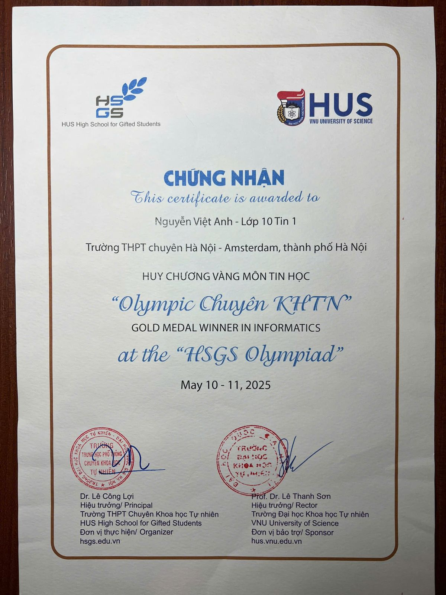
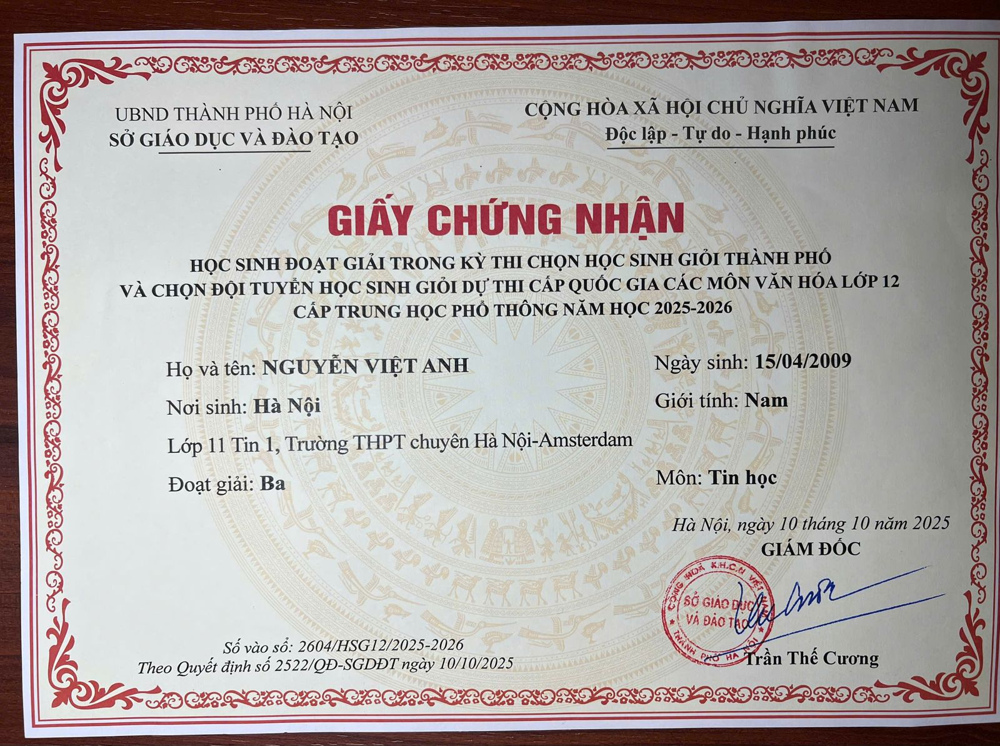
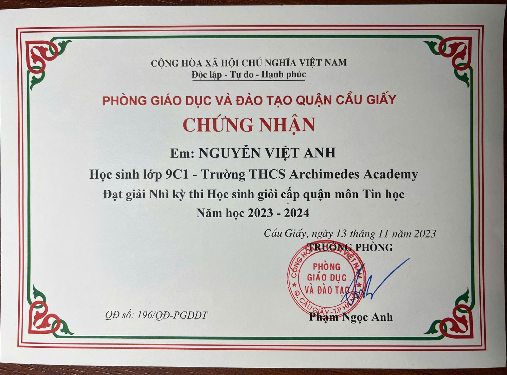

Giới thiệu
Mình là Nguyễn Việt Anh, học sinh lớp 11 Tin 1, trường THPT chuyên Hà Nội – Amsterdam. Mình theo đuổi lập trình thi đấu (competitive programming) từ THCS và đã đạt nhiều giải thưởng Tin học các cấp: Huy chương Vàng HSGS Olympiad, giải Ba HSG Thành phố Hà Nội lớp 12 và giải Ba Olympic bậc THPT của ĐHQG Hà Nội khi mới học lớp 11. Mình cũng tích cực tham gia hoạt động thiện nguyện vì trẻ em.
“Mỗi bài toán khó đều có lời giải — chỉ cần đủ kiên nhẫn để debug.”
Kỹ năng
Sở thích & Quan tâm
Định hướng tương lai
Mục tiêu gần của mình là giành suất vào đội tuyển HSG Quốc gia môn Tin học. Xa hơn, mình muốn theo đuổi ngành Khoa học Máy tính, hiện thực hóa hệ thống an toàn ô tô bằng AI + IoT từ bản thiết kế thành nguyên mẫu chạy thật.
Hành trình
Giải Nhì kỳ thi HSG cấp quận môn Tin học (Quận Cầu Giấy) khi học lớp 9 tại THCS Archimedes Academy.
Trúng tuyển lớp chuyên Tin, THPT chuyên Hà Nội – Amsterdam.
Huy chương Vàng môn Tin học tại HSGS Olympiad (05/2025); Giải Ba HSG Thành phố lớp 12 môn Tin học khi đang học lớp 11 (10/2025).
Giải Ba Olympic bậc THPT của ĐHQG Hà Nội môn Tin học (01/2026); thiện nguyện tại Bệnh viện Nhi Trung ương; phát triển ý tưởng “Hệ thống an toàn cho ô tô”.
Nghiên cứu khoa học
Thành tích & Giải thưởng
Huy chương Vàng môn Tin học – HSGS Olympiad (Olympic Chuyên KHTN)

Giải Ba kỳ thi chọn HSG Thành phố các môn văn hóa lớp 12 – môn Tin học (2025–2026)

Giải Ba kỳ thi Olympic bậc THPT của ĐHQG Hà Nội – môn Tin học (2025–2026)
Giải Nhì kỳ thi HSG cấp quận môn Tin học (2023–2024)

Chứng chỉ chuẩn hóa
Hoạt động ngoại khóa & Dự án
Sản phẩm cá nhân: Hệ thống an toàn cho ô tô (AI + IoT)
Thiết kế hệ thống an toàn toàn diện cho ô tô gồm: hệ thống đo mức độ tập trung của người lái xe bằng thiết bị đeo tai kết hợp camera xử lý ảnh; các cảm biến phát hiện trẻ em bị bỏ quên trên xe; cảm biến phát hiện chất độc hại trong khoang xe như cồn, khói thuốc lá, nhiệt độ cao, khí CO2…; và mô-đun dự đoán nguy hiểm xung quanh xe bằng công nghệ AI kết hợp cảm biến IoT.
- Đo mức độ tập trung của người lái xe bằng thiết bị đeo tai kết hợp camera xử lý ảnh.
- Cụm cảm biến phát hiện trẻ em bị bỏ quên trên xe.
- Phát hiện tác nhân nguy hiểm trong khoang xe: nồng độ cồn, khói thuốc lá, nhiệt độ cao, khí CO2…
- Dự đoán nguy hiểm xung quanh ô tô bằng công nghệ AI kết hợp mạng cảm biến IoT.
Thiện nguyện tại Bệnh viện Nhi Trung ương (2026)
Tham gia thăm hỏi, tặng quà và tổ chức hoạt động cho các bệnh nhi đang điều trị tại Bệnh viện Nhi Trung ương, Hà Nội.


{kind=link}
{kind=link}
{kind=link}
{kind=link}
{kind=link}
{kind=link}
{kind=link}